Windows Control Panel Icons
Windows 3.1
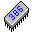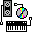
 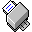
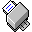
DOWNLOAD
 14 .ico files zipped (Windows) (6.88 KB)
14 .ico files zipped (Windows) (6.88 KB)

Windows NT 3.1
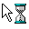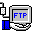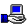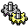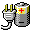
DOWNLOAD
11 .ico files zipped (Windows) (4.93 KB)
Windows 95
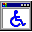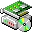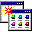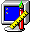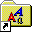 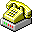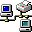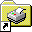
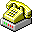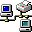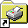
DOWNLOAD
21 .ico files zipped (Windows) (11.4 KB)
Windows NT 4.0
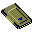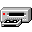
DOWNLOAD
4 .ico files zipped (Windows) (1.87 KB)
Windows 98
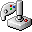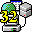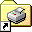
DOWNLOAD
16 .ico files zipped (Windows) (37.6 KB)
Windows 2000
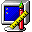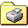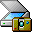
DOWNLOAD
15 .ico files zipped (Windows) (31.8 KB)
Windows ME
 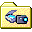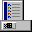
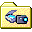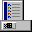
DOWNLOAD
4 .ico files zipped (Windows) (7.62 KB)
Windows Whistler 2257
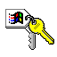
DOWNLOAD
3 .ico files zipped (Windows) (2.28 KB)
Windows Whistler 2428

DOWNLOAD
4 .ico files zipped (Windows) (44 KB)
Windows XP


 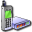
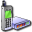


 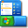
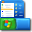 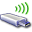
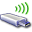
DOWNLOAD
30 .ico files zipped (Windows) (314 KB)
Windows Longhorn 4093

DOWNLOAD
6 .ico files zipped (Windows) (87.5 KB)
Windows Vista


 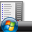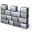
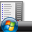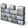
DOWNLOAD
50 .ico files zipped (Windows) (3.94 MB)
Windows 7
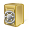

 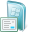
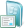
 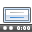
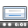 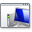
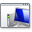
DOWNLOAD
12 .ico files zipped (Windows) (784 KB)
Windows 8


DOWNLOAD
9 .ico files zipped (Windows) (471 KB)